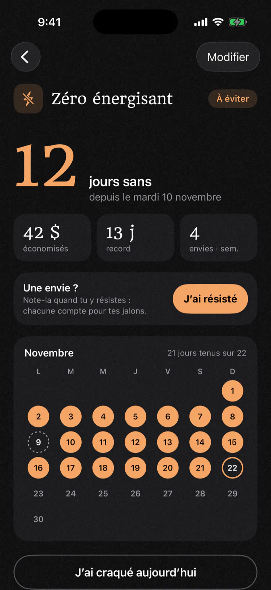
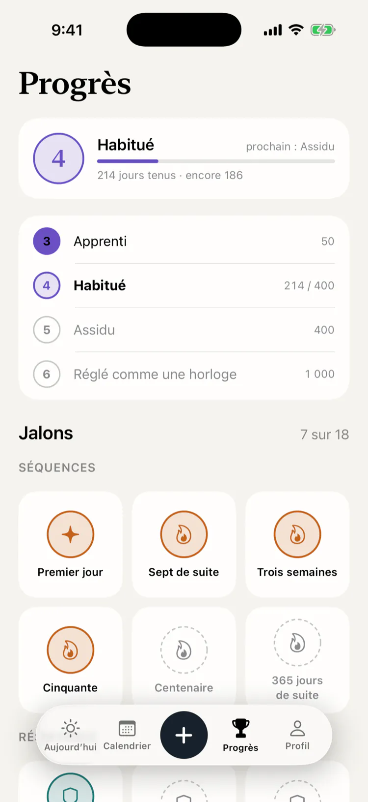

Arrêter les boissons énergisantes, un jour à la fois
Dernière mise à jour : 23 novembre 2026
Coutume suit tes habitudes sur iPhone, gratuitement, avec un type d’habitude fait pour arrêter : elle compte tes jours sans boisson énergisante, l’argent économisé et les envies résistées. Sans compte, sans pub.

Tenue d’office, notée seulement quand tu craques
La plupart des apps veulent que tu coches une case chaque jour. Une habitude à éviter fonctionne à l’inverse : chaque journée compte comme tenue, sauf si tu notes un écart. Les bons jours, tu n’as rien à faire.
Jours sans, argent économisé, envies résistées
Coutume compte tes jours sans boisson énergisante, l’argent que tu n’as pas dépensé en canettes et les envies auxquelles tu as résisté : tu les vois s’additionner semaine après semaine.
Un écart remet le compteur à zéro, pas tout le reste
Si tu craques, le compteur de jours sans repart à zéro. Ton niveau, tes jalons et ton mois restent : ils comptent chaque journée tenue.

La remplacer par autre chose
Arrêter est plus facile avec quelque chose à la place. Ajoute à côté une habitude à prendre, comme 8 verres d’eau ou une marche, et remplis son anneau d’un toucher, ou laisse Santé le remplir pour toi.

Coutume est une app d’habitudes, pas une app médicale. Si ta consommation de caféine t’inquiète, parles-en à un médecin ou à un pharmacien.
Coutume arrive bientôt sur l’App Store, pour iPhone : gratuite, sans compte, sans pub et sans abonnement.
Guides liés
- Compteur de jours sans
Un compteur de jours sans pour tout ce que tu veux arrêter
- Arrêter de vapoter
Tes jours sans vapoter, l’argent économisé et les envies résistées
- Suivi de l’eau
Compte tes verres d’eau d’un toucher, ou laisse Santé le faire
- Combien de temps pour une habitude
Ce que dit la recherche sur le mythe des 21 jours, et pourquoi un jour manqué ne compte pas
Questions
Consulte les questions fréquentes ou l’assistance.